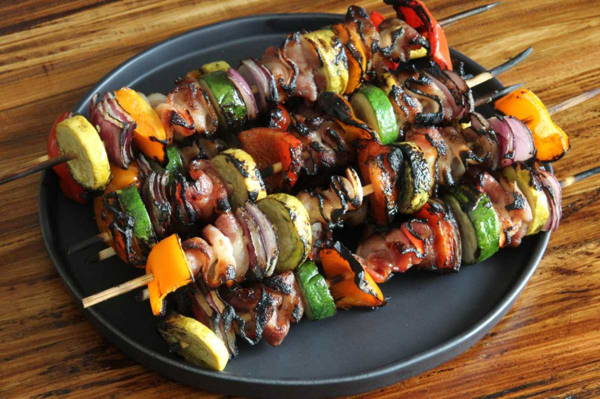
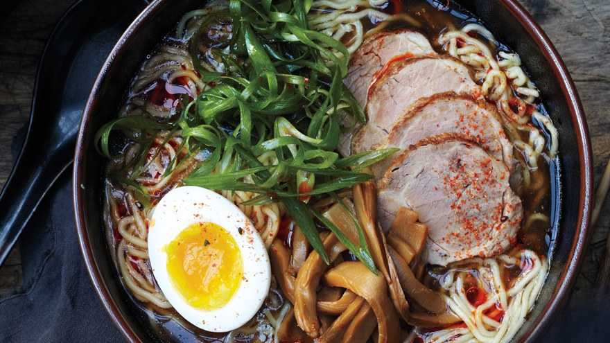

Top 1 - Lasagna
 It is one of the most established pasta yet has become famous just in the current times. The actual fixings sound delicious - meats, pasta, vegetables, pureed tomatoes, and tons of cheddar. Lasagne (plural structure for Lasagna) is adored by individuals of any age and is dish ideal for any event or festivity.
It is one of the most established pasta yet has become famous just in the current times. The actual fixings sound delicious - meats, pasta, vegetables, pureed tomatoes, and tons of cheddar. Lasagne (plural structure for Lasagna) is adored by individuals of any age and is dish ideal for any event or festivity.
Top 2 - Donuts The donut is well known in numerous nations and is ready in different structures as a sweet tidbit. Doughnuts are normally rotisserie from a flour mixture, and ordinarily ring-molded. Different garnishes, for example, sugar, chocolate, maple frosting and so on are utilized that complements the flavor of this bite, and in a real sense fills in as a what tops off an already good thing.
Top 3 - Hamburger
 This well known dish of Germany comprises of at least one cooked patties of ground meat, typically hamburger, that is set just inside the cut bread or a bun. This is then either sautéed, barbecued or smoked. Cheeseburgers are regularly presented with lettuce, heaps of cheddar, tomato, pickles and so forth. Fixings, for example, ketchup, mustard, mayonnaise are as often as possible put on sesame seed buns.
This well known dish of Germany comprises of at least one cooked patties of ground meat, typically hamburger, that is set just inside the cut bread or a bun. This is then either sautéed, barbecued or smoked. Cheeseburgers are regularly presented with lettuce, heaps of cheddar, tomato, pickles and so forth. Fixings, for example, ketchup, mustard, mayonnaise are as often as possible put on sesame seed buns.
Top 4 - Pizza This Italian Dish comprises of an ordinarily round, wheat base batter that is decorated with tomatoes, cheddar, and regularly different fixings prepared at a high temperature, customarily in a wood-terminated broiler. Pizza today has become one of the most well known cheap food things on the planet.
Top 5 - Kebab They comprise of ground meat or fish, natural products, and vegetables now and again and are cooked on a stick with a major fire under, very much like a grill on the barbecue. It is cooked with different going with fixings including garlic, dark pepper, and vegetable oil.This dish has an ideal mix of taste, going from tart to zesty, making it probably the best dish on the planet.
Top 6 - Ramen Ramen is a Japanese dish made of wheat noodles and served in the stock alongside vegetables and meat. Ramen comes in a few flavors, from tart to fiery, contingent upon the kind of the stock. Each locale in Japan has it's own. Tonkotsu, a famous style of ramen incorporates pork bone stock and the miso ramen, one more well known dish started in Hokkaido.
Top 7 - Sushi
 Ready with vinegared rice and a wide scope of fixings including fish, vegetables, and in some cases organic products. Sushi tastes best when presented with wasabi, cured ginger, and soy sauce. The sort of fish in it characterizes a sushi's taste. Notwithstanding, the vinegared rice gives the dish a tart taste in general. Fish, eel, and Salmon will more often than not taste light while octopus enhanced sushi is by and large solid in taste.
Ready with vinegared rice and a wide scope of fixings including fish, vegetables, and in some cases organic products. Sushi tastes best when presented with wasabi, cured ginger, and soy sauce. The sort of fish in it characterizes a sushi's taste. Notwithstanding, the vinegared rice gives the dish a tart taste in general. Fish, eel, and Salmon will more often than not taste light while octopus enhanced sushi is by and large solid in taste.
Top 8 - Goulash Goulash is ready from one or the other hamburger, pork, veal, or sheep. The meat is cut into pieces and conveniently prepared with salt. It is then seared with oil and cut onion. The dish is passed on to stew in the wake of adding paprika to it. It is presented with an assortment of vegetables including carrot, parsley, celery, and potatoes. The comforting nature of the stew is what makes it one of the best to eat.
Top 9 - Fried chicken Crunchy outwardly and succulent inside, singed chicken, as the name proposes, is a dish comprising of chicken pieces profoundly seared, giving it a fresh covering. The chicken is then prepared with spices and flavors. The spicier, the better. Overabundance flour is utilized to make the outside layer thicker. The dish was first ready during the 1830s, the rest is history. Singed chicken is basically the most adored dish in the United States.
Top 10 - Poutine Poutine incorporates french fries and cheddar curds finished off with customary earthy colored chicken sauce. Begun in the last part of the 1950s in the focal region of Canada, the hot sauce is generally served at room temperatures and t keep up with the surface, the fries are added just prior to serving the dish.